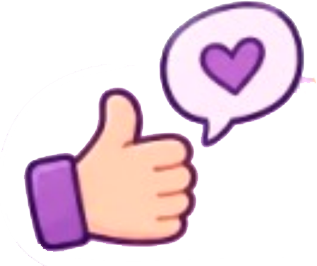

Retroalimentación
Tus respuestas nos cuentan cómo vas
Tu desempeño: 90%
Puntaje: 90/100
Trabajo: 90%
Según tu proceso, te recomendamos:
Aqui irán las indicaciones de retroalimentación según el desempeño del usuario.

Tu desempeño: 90%
Puntaje: 90/100
Trabajo: 90%
Según tu proceso, te recomendamos: